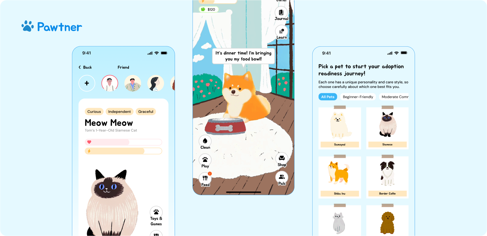
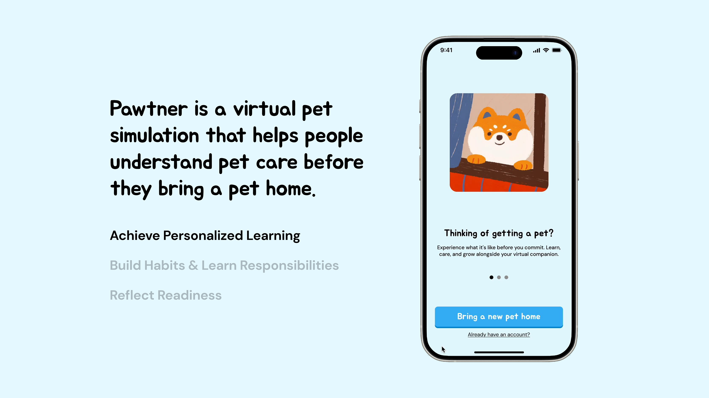
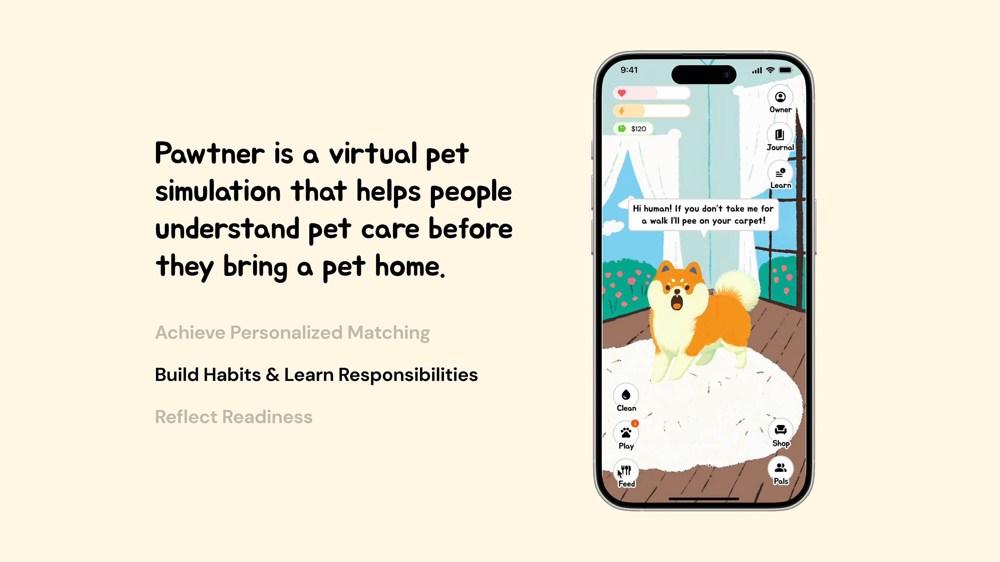
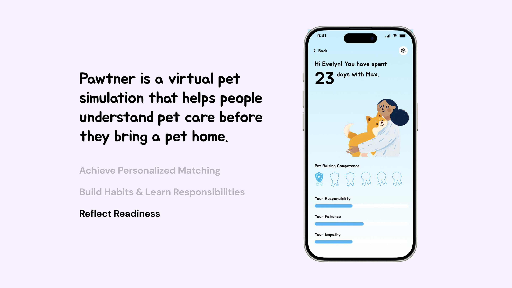
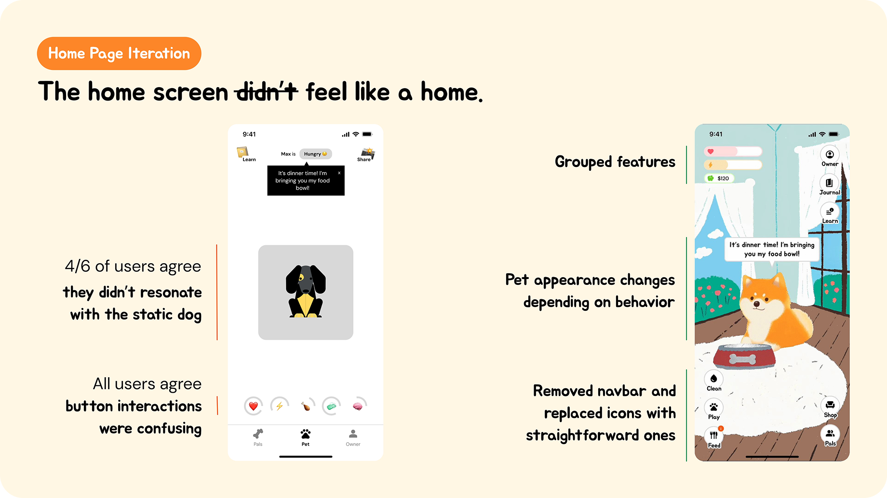
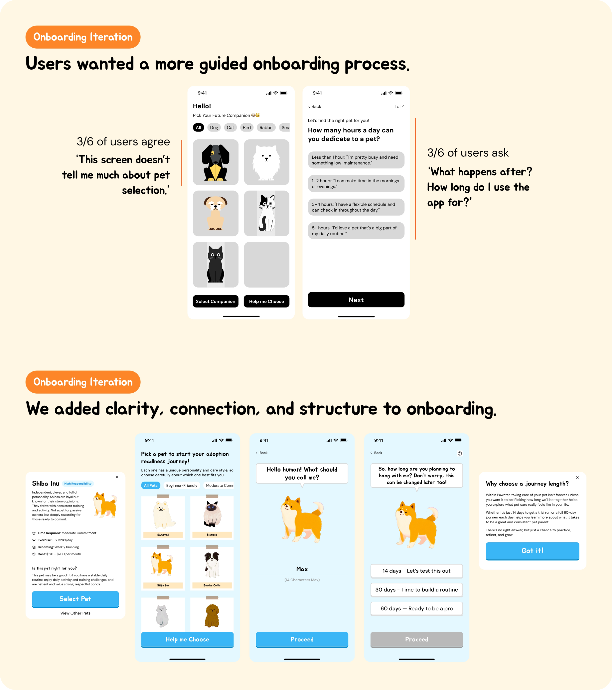
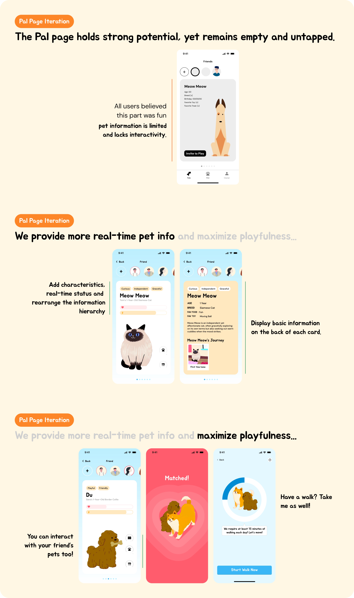

A cozy way to prepare for pet care
Preparing potential first-Time adopters through guided pet care learning
Team
2 Product Designers (Me)
Project Type
Passion Project
Duration
2025.3-4
Initial Problem Discovery
I would love a dog! But on second thought... pet care feels overwhelming. Am I ready?
This project was inspired by our own experiences with pet care. After moving to NYC, away from family and friends, I considered getting a dog for companionship.
But as a first-time pet owner, I realized I had little understanding of the real responsibilities behind pet ownership and began asking myself: “Am I actually ready for this?”
Research shows that nearly 1 in 10 adopted pets are no longer in their adoptive homes within six months, often due to mismatched expectations.
This led us to a key question:
What if we could create a way for people to
{explore what pet care actually involves}
before they make a real commitment?



🤔 What did our process look like?
Personas & User Journeys
Potential pet owners often underestimate the challenges of pet ownership in real life.

Iteration
The first version worked well, but later iterations made the experience feel more engaging and fun.



Reflection
From Simulation to Real-World Readiness
A mentor's challenge reframed everything: does Pawtner prepare users for real pet ownership, or just make them feel ready?
Looking back, we over-indexed on engagement and emotional bonding — and underrepresented the friction, uncertainty, and difficult trade-offs that real ownership demands. The simulation was approachable, but approachable isn't the same as accurate.
If I iterated again, I'd design consequence-driven scenarios — conflicting schedules, unexpected vet bills, long-term commitment pressure — and redefine success not as completion, but as whether users build a more honest mental model of what owning a pet actually costs them.
Let's build something.
Together!
Together!


New York City